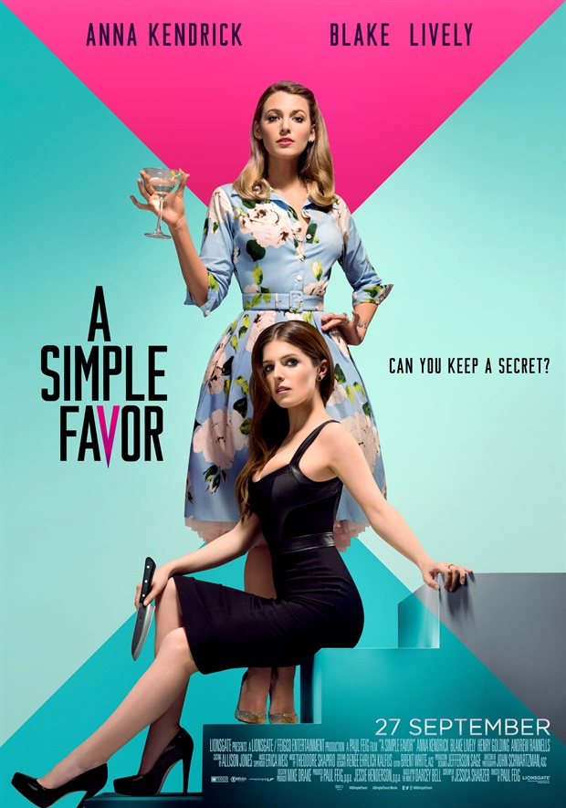

A Simple Favor
8/10
There are a lot of things that I like in this movie. Specifically the kiss scene between Anna Kendrick and Blake Lively. Thank you for that. However, there are some major things I don’t like about this movie. It’s homophobic that we had to sit through 2 straight sex scenes and the only bone they throw at the gays is a kiss. It’s a good kiss, but why not a sex scene. It’s just as easy to make a sex scene with a woman as it is with a man, so why was there no gay sex scene? I’ll tell you, it’s homophobic. Other than that, this is a good movie.